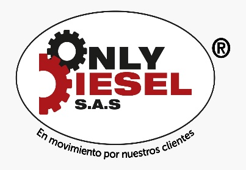
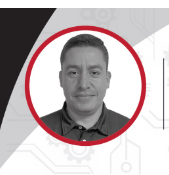
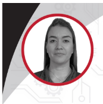
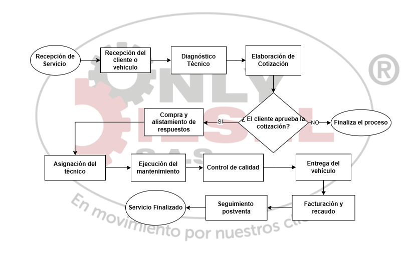

Plantilla para la identificación y caracterización de la unidad de análisis — Only Diesel S.A.S.
Contenido completo de la Plantilla para la Identificación y Caracterización de la Unidad de Análisis (Only Diesel S.A.S., 2026).

Identificación
| Razón Social | Only Diesel sas |
| Nombre Comercial | Only Diesel sas |
| Ubicación | Cr 59 #36-91 Ditaires-Itagui Antioquia |
Equipo Directivo


Sinopsis (Reseña de la empresa)
Only Diesel S.A.S. nació en el año 2018 como el sueño de un emprendedor apasionado por el mundo diésel. Su fundador, Alejandro Uribe, después de más de 25 años construyendo una trayectoria en el sector de repuestos diésel, decidió dejar atrás la estabilidad de ser empleado para crear una empresa que ofreciera soluciones especializadas, oportunas y accesibles para el mercado.
Su historia comenzó desde abajo. Inició como mensajero, luego fue auxiliar de bodega, asesor comercial y posteriormente administrador de un almacén y laboratorio de inyección diésel. Cada cargo le permitió conocer las necesidades reales del sector y comprender que existía una oportunidad para ofrecer una alternativa diferente al concesionario tradicional, especialmente para la marca Mercedes-Benz, donde los tiempos de importación de repuestos podían superar los 90 días y los costos representaban una dificultad para los transportadores y empresarios.
Con esa visión nació Only Diesel en un apartamento de apenas 52 metros cuadrados, que al mismo tiempo funcionaba como oficina, bodega y centro de operaciones. Allí se almacenaban los primeros repuestos mientras Alejandro atendía personalmente cada proceso: vender, cotizar, comprar, facturar, entregar pedidos y visitar clientes.
Meses después, Alejandro invitó a su esposa, Catalina Henao, a hacer parte de este proyecto. Después de 16 años de experiencia en el sector salud, Catalina decidió dejar su profesión para emprender juntos este camino, convencidos de que construir empresa significaba trabajar por un propósito común y apostar por un sueño compartido.
Durante los primeros años lograron consolidarse desde aquel pequeño apartamento, superando incluso los desafíos económicos generados por la pandemia, etapa que fortaleció la empresa y reafirmó su compromiso con los clientes.
Con el crecimiento del mercado y la llegada de nuevos competidores especializados en repuestos Mercedes-Benz, Only Diesel entendió que era momento de evolucionar nuevamente. Escuchando las necesidades de sus propios clientes, decidió complementar la comercialización de repuestos con la prestación de servicios de mantenimiento, permitiendo ofrecer una solución integral: no solo suministrar el repuesto adecuado, sino también contar con el personal especializado para instalarlo.
Este cambio marcó un nuevo capítulo en la historia de la organización. La empresa se trasladó a una sede comercial más amplia y comenzó a conformar un equipo de trabajo. Inicialmente, los servicios técnicos se prestaban mediante una alianza estratégica con tres técnicos especializados, quienes posteriormente pasaron a formar parte de la nómina de Only Diesel gracias al crecimiento sostenido de la operación.
Con el paso del tiempo, la empresa continuó transformándose. El mercado exigía nuevas soluciones y Only Diesel decidió dar un paso más, dejando de ser un taller especializado únicamente en Mercedes-Benz para convertirse en un centro integral de mantenimiento diésel multimarca, ampliando su capacidad técnica y atendiendo las necesidades de un mayor número de clientes y flotas empresariales.
Hoy, Only Diesel S.A.S. cuenta con 22 colaboradores, ha crecido a través de cuatro sedes y continúa fortaleciendo su infraestructura, sus procesos y su equipo humano.
Más allá del crecimiento empresarial, Only Diesel mantiene intacta la esencia con la que nació: ser una empresa cercana, confiable y comprometida con brindar soluciones rápidas, técnicas y de alta calidad para el sector transporte.
Creemos firmemente que el verdadero motor de nuestra organización son las personas. Por ello trabajamos diariamente bajo dos grandes pilares que orientan cada una de nuestras decisiones: el bienestar de nuestros colaboradores y la satisfacción de nuestros clientes.
Hoy seguimos escribiendo nuestra historia con la misma convicción del primer día: crecer con disciplina, actuar con honestidad, innovar constantemente y construir relaciones de confianza que nos permitan seguir moviendo el país, un vehículo a la vez.
Unidades o Divisiones del negocio
Mantenimiento preventivo · Mantenimiento correctivo · Diagnóstico electrónico · Sistemas de combustible · Sistemas de frenos · Sistemas eléctricos y electrónicos · Mecánica general diésel
Servicio In House · Atención programada · Gestión de mantenimientos preventivos y correctivos
Repuestos originales · Repuestos homologados
Marcas
Portafolio de Productos o Servicios
Repuestos originales · Repuestos homologados · Componentes eléctricos y electrónicos · Sistemas de combustible · Componentes de suspensión y frenos · Lubricantes, filtros y consumibles · Repuestos para mantenimiento preventivo y correctivo
Diagnóstico electrónico especializado · Mantenimiento preventivo · Mantenimiento correctivo · Reparación de sistemas diésel · Atención de fallas mecánicas y eléctricas · Programación de mantenimientos para flotas · Servicio In House para clientes empresariales · Asesoría técnica especializada
Cobertura
Only Diesel S.A.S. presta sus servicios desde la ciudad de Medellín, atendiendo clientes del Área Metropolitana y diferentes municipios de Antioquia.
Adicionalmente, gracias a su experiencia en atención de flotas empresariales, presta servicios a nivel regional mediante mantenimientos programados e intervenciones In House, atendiendo empresas de transporte, logística, construcción, alimentos, consumo masivo y otros sectores productivos.
Principales Clientes
Renting Colombia, Éxito, Avinal, Cademac, y otras empresas con flotas de vehículos comerciales y de carga.
Descripción de la operación comercial
Only Diesel S.A.S. desarrolla una operación comercial enfocada en brindar soluciones integrales para el mantenimiento de vehículos diésel multimarca, combinando el suministro de repuestos con servicios especializados de diagnóstico, mantenimiento preventivo y correctivo.
Nuestra operación inicia con la identificación de la necesidad del cliente mediante procesos de diagnóstico técnico, inspección del vehículo o requerimientos específicos de repuestos. Posteriormente, se realiza la validación técnica, la elaboración de la cotización y el suministro de las alternativas más convenientes en términos de calidad, disponibilidad y costo.
Una vez autorizados los trabajos, se coordina la planeación de la intervención, la gestión de repuestos, la asignación del personal técnico y la ejecución de los mantenimientos, siguiendo protocolos estandarizados que garantizan la trazabilidad del proceso, la seguridad del vehículo y la calidad del servicio.
La operación está respaldada por herramientas tecnológicas para la gestión de órdenes de trabajo, inventarios, seguimiento de vehículos y comunicación permanente con el cliente, permitiendo mantener información actualizada sobre el estado de cada intervención.
Adicionalmente, Only Diesel presta atención especializada a flotas empresariales mediante servicios programados e In House, adaptando sus procesos a las necesidades operativas de cada cliente para garantizar la disponibilidad de los vehículos y minimizar tiempos de inmovilización.
Nuestro modelo de operación se fundamenta en cuatro pilares:
Estos elementos nos permiten ofrecer un servicio integral que genera confianza, relaciones de largo plazo y soluciones eficientes para el sector transporte.
| Total Activos | $ |
| Total Pasivos | $ |
| Total Patrimonio | $ |
| Total Capital | $ |
| Ingresos | $ |
| Costos | $ |
| Gastos | $ |
| Utilidad Neta | $ |
Principales Retos Financieros de la Organización
Only Diesel S.A.S. ha logrado un crecimiento sostenido desde su creación; sin embargo, como toda empresa en proceso de consolidación, enfrenta retos financieros importantes que orientan su planeación estratégica y la toma de decisiones.
Los principales desafíos identificados son:
1. Diversificación de la cartera de clientes. Actualmente, aproximadamente el 70 % de los ingresos de la empresa provienen de un solo cliente estratégico, lo que genera una alta concentración del riesgo comercial. Por esta razón, uno de los principales objetivos es ampliar la participación de nuevos clientes y fortalecer el posicionamiento de la empresa en diferentes sectores, reduciendo gradualmente esta dependencia.
2. Mantener un flujo de caja saludable. La operación del negocio requiere una adecuada administración del capital de trabajo para garantizar el cumplimiento oportuno de las obligaciones con proveedores, colaboradores, entidades financieras y organismos gubernamentales, manteniendo la liquidez necesaria para el funcionamiento de la empresa.
3. Adaptación a los cambios económicos y laborales. Los incrementos del salario mínimo, las reformas laborales y el aumento de los costos prestacionales representan un reto permanente para la sostenibilidad financiera de la organización. En respuesta a este escenario, Only Diesel trabaja en estrategias que permitan mantener el equilibrio entre el bienestar de los colaboradores y la viabilidad económica del negocio.
4. Competitividad del talento humano. La empresa busca continuar ofreciendo condiciones laborales competitivas frente al mercado. Para ello, ha implementado beneficios e incentivos extralegales de carácter no prestacional, orientados a reconocer el desempeño, promover el bienestar y fortalecer la permanencia del talento humano, procurando que estas iniciativas sean sostenibles en el tiempo.
5. Optimización de costos y eficiencia operativa. Only Diesel trabaja continuamente en la optimización de sus procesos, el control de costos, la negociación estratégica con proveedores y la mejora de la productividad, con el propósito de mantener la rentabilidad sin afectar la calidad del servicio prestado a sus clientes.
6. Fortalecimiento financiero para el crecimiento. Como parte de su proyección, la organización busca fortalecer su capacidad financiera mediante una adecuada planeación, el acceso responsable a herramientas de financiación cuando sean necesarias y la generación de estrategias comerciales que permitan incrementar las ventas, diversificar ingresos y asegurar un crecimiento sostenible.
La empresa asume estos retos como oportunidades para fortalecer su modelo de negocio, consolidar su estabilidad financiera y continuar generando valor para sus colaboradores, clientes, proveedores y aliados estratégicos.
Diagrama del proceso operativo del negocio (Ciclo Operativo del Negocio)

Figura 2. Elaboración propia con base en la información suministrada por Only Diesel S.A.S. (2026)
Actualmente Only Diesel S.A.S. genera 22 empleos directos, distribuidos en las siguientes áreas:
Only Diesel genera empleo indirecto mediante la contratación de proveedores y aliados estratégicos, entre ellos:
Inventario de Maquinaria y Equipos (relevantes)
Equipos de diagnóstico electrónico multimarca · Escáneres especializados · Compresores de aire · Herramientas neumáticas · Herramientas especializadas para motores diésel · Equipos de medición eléctrica · Gatos hidráulicos · Torres de soporte · Prensas hidráulicas · Equipos de lubricación · Equipos para cambio de aceite · Equipos de limpieza industrial · Equipos de cómputo · Software contable, talento humano y operativo.
Principales Proveedores
Autolarte, Foton, Navitrans y otros locales.
Premios, Reconocimientos y/o Certificaciones
A la fecha, Only Diesel S.A.S. no cuenta con premios, reconocimientos o certificaciones oficiales.
No obstante, la empresa se encuentra en un proceso permanente de fortalecimiento organizacional, enfocado en la estandarización de procesos, el desarrollo del talento humano, la implementación de sistemas de gestión y la mejora continua de sus operaciones.
Actualmente, Only Diesel desarrolla y mantiene programas internos como:
Estos esfuerzos reflejan el compromiso de la organización con la calidad, la sostenibilidad, el cumplimiento normativo y la excelencia en la prestación de sus servicios, proyectándose hacia la obtención de futuras certificaciones y reconocimientos que fortalezcan su competitividad en el mercado.
Con base en el análisis realizado, se evidencia que la misión de Only Diesel S.A.S. cumple con la totalidad de los criterios estratégicos evaluados, al definir claramente el mercado al que se dirige, la actividad económica que desarrolla, los productos y servicios que ofrece, sus ventajas competitivas y la filosofía gerencial que orienta su operación. Una misión efectiva debe comunicar el propósito de la organización, identificar su razón de ser y reflejar los elementos que la diferencian frente a sus grupos de interés (David & David, 2017; Departamento Administrativo de la Función Pública [DAFP], s. f.).
Diagnóstico y Recomendaciones
La misión presenta una estructura clara y coherente, permitiendo identificar de manera precisa el propósito de la empresa, el mercado objetivo y el valor que ofrece mediante sus productos y servicios. Asimismo, incorpora elementos diferenciadores como la experiencia del equipo de trabajo y el compromiso con la sostenibilidad, aspectos que fortalecen su identidad organizacional.
No obstante, desde nuestra perspectiva como equipo consultor, se identifican oportunidades para fortalecer aún más su enfoque estratégico.
Fortalecimiento de la propuesta de valor
Aunque la misión comunica adecuadamente las actividades que desarrolla la empresa, el mercado al que atiende y sus ventajas competitivas, podría reforzar con mayor claridad el impacto que genera para sus clientes. Actualmente se describe qué hace la organización, pero podría enfatizar de manera más explícita el beneficio que reciben las empresas al confiar en Only Diesel S.A.S., resaltando la generación de valor, la continuidad operativa y la construcción de relaciones de largo plazo. La literatura en dirección estratégica destaca que una misión efectiva no solo define la actividad de la empresa, sino también el valor que entrega a sus clientes y demás grupos de interés (David & David, 2017; Universidad Nacional de Colombia, s. f.).
Recomendación
Se recomienda complementar la misión incorporando un enfoque más orientado hacia la generación de valor para el cliente y el establecimiento de relaciones estratégicas de largo plazo. Asimismo, podría resaltarse el aporte que la organización realiza a la productividad y continuidad de las operaciones de sus clientes, fortaleciendo así su propuesta de valor y su orientación al servicio. Este enfoque contribuye a consolidar ventajas competitivas sostenibles y a diferenciar la organización dentro de un mercado altamente especializado (David & David, 2017; Departamento Administrativo de la Función Pública [DAFP], s. f.).
Propuesta — Misión
En Only Diesel S.A.S. somos aliados estratégicos de las empresas que operan vehículos diésel pesados, ofreciendo soluciones integrales mediante la importación y comercialización de repuestos y componentes originales y homologados, así como servicios especializados de mantenimiento preventivo y correctivo a través de nuestro Tecnicentro.
Nuestro propósito es generar valor para nuestros clientes mediante soluciones confiables, eficientes y técnicamente especializadas, respaldadas por un equipo con más de 20 años de experiencia, promoviendo relaciones de largo plazo y contribuyendo a la continuidad de sus operaciones. Desarrollamos nuestras actividades con un firme compromiso con la sostenibilidad, incorporando prácticas responsables que reduzcan el impacto ambiental y promuevan el uso eficiente de los recursos.
La propuesta conserva la esencia de la misión actual, manteniendo su enfoque en el mercado objetivo, los productos y servicios ofrecidos, la experiencia organizacional y el compromiso con la sostenibilidad. Sin embargo, fortalece su alcance estratégico al incorporar de manera más explícita la generación de valor para los clientes y la construcción de relaciones de largo plazo, aspectos que refuerzan la orientación al cliente y permiten comunicar con mayor claridad el aporte que la organización realiza al desempeño de las empresas que atiende. En consecuencia, la misión proyecta una organización más centrada en la creación de valor y en el fortalecimiento de su posicionamiento competitivo (David & David, 2017; Universidad Nacional de Colombia, s. f.).
Referencias del análisis
David, F. R., & David, F. R. (2017). Conceptos de administración estratégica (15.ª ed.). Pearson.
Departamento Administrativo de la Función Pública. (s. f.). Cómo opera MIPG: Direccionamiento estratégico y planeación. Gobierno de Colombia. https://www1.funcionpublica.gov.co/web/mipg/como-opera-mipg
Departamento Administrativo de la Función Pública. (2026). Caracterización del proceso de direccionamiento estratégico y planeación. Gobierno de Colombia. https://www.funcionpublica.gov.co/documents/61037/651881/2025-05-20_Caracterizacion_direccionamiento_estrategico_v10.pdf
Con base en el análisis realizado, se evidencia que la visión actual cumple con la mayoría de los criterios estratégicos evaluados; sin embargo, presenta una oportunidad de fortalecimiento en el componente de integración empresarial (David & David, 2017; Departamento Administrativo de la Función Pública [DAFP], s. f.).
Diagnóstico y Recomendaciones
La visión presenta una estructura estratégica clara, al establecer un horizonte temporal, definir el posicionamiento esperado de la empresa e incorporar aspectos relacionados con el crecimiento, la innovación y la sostenibilidad. No obstante, desde nuestra perspectiva como equipo consultor, se identifica una oportunidad de fortalecimiento en el componente de integración empresarial.
Falta de ecosistema colaborativo
Aunque la visión evidencia un enfoque claro hacia el crecimiento, la innovación y la sostenibilidad, no incorpora de manera explícita la integración con otros actores del sector, como proveedores, fabricantes, aliados estratégicos o redes de servicio. La literatura en dirección estratégica señala que las organizaciones fortalecen su competitividad cuando desarrollan relaciones de colaboración que les permiten acceder a recursos, capacidades y ventajas difíciles de obtener de manera individual (David & David, 2017; Universidad Nacional de Colombia, s. f.).
Recomendación
Se recomienda incorporar dentro de la visión conceptos asociados a la colaboración estratégica, tales como alianzas estratégicas, integración con la cadena de valor o redes de servicio, con el fin de reflejar la capacidad de la organización para generar sinergias, fortalecer su ventaja competitiva y responder de manera integral a las dinámicas del mercado. La cooperación entre empresas constituye un factor clave para incrementar la competitividad, generar innovación y crear valor sostenible para los diferentes grupos de interés (David & David, 2017; Departamento Administrativo de la Función Pública [DAFP], s. f.).
Propuesta — Visión
Para fortalecer el enfoque estratégico y complementar el componente de integración empresarial, se propone la siguiente:
Para 2030, Only Diesel S.A.S. será reconocida a nivel nacional como una empresa líder en el suministro de repuestos diésel y en la prestación de servicios técnicos especializados para flotas pesadas. Seremos un centro de servicio multimarca innovador, respaldado por alianzas estratégicas con proveedores y actores clave del sector, con marcas propias posicionadas y un portafolio integral de soluciones que responda a las exigencias del mercado. Nuestro crecimiento estará sustentado en la excelencia operativa, la transformación tecnológica y la sostenibilidad ambiental, contribuyendo al desarrollo responsable y competitivo del sector automotriz.
La propuesta conserva la esencia de la visión actual, al mantener su orientación hacia el liderazgo, la innovación y la sostenibilidad. No obstante, fortalece su alcance estratégico mediante la incorporación explícita de la integración con actores clave de la cadena de valor, aspecto que favorece una mayor articulación empresarial y una mejor preparación para afrontar los retos competitivos del sector automotriz. En consecuencia, la visión proyecta una organización con mayores capacidades para generar valor sostenible y consolidar relaciones estratégicas de largo plazo (David & David, 2017; Universidad Nacional de Colombia, s. f.).
Referencias del análisis
David, F. R., & David, F. R. (2017). Conceptos de administración estratégica (15.ª ed.). Pearson.
Departamento Administrativo de la Función Pública. (s. f.). Cómo opera MIPG: Direccionamiento estratégico y planeación. Gobierno de Colombia. https://www1.funcionpublica.gov.co/web/mipg/como-opera-mipg
Valores Corporativos Actuales
Calidad: Nuestros colaboradores aportaran lo mejor de cada uno para satisfacer las necesidades de los clientes y el crecimiento corporativo, al igual que nuestros productos cumplen con los estándares exigidos por el mercado.
Puntualidad: Tenemos el compromiso de cumplir con nuestra promesa de valor y entrega en el tiempo pactado y de la forma informada y acordada.
Honestidad: La claridad, transparencia y sinceridad en todas nuestras actividades y conductas hacen de nuestra relación empresa/cliente, una construcción continua de confianza entre ambos.
Servicio y atención al cliente oportuno: El equipo de trabajo de Only Diésel acompaña de manera oportuna al cliente para que pueda resolver su necesidad en el menor tiempo y de la forma más eficaz.
Confianza: Asumimos el compromiso de cumplir con los trabajos encargados aun frente a circunstancias cambiantes o adversas, sin comprometer nuestra promesa de calidad y servicio.
Comunicación: La comunicación nos ayuda a intercambiar de forma efectiva pensamientos e ideas para establecer la solución adecuada a las necesidades, llegando a acuerdos cómodos y claros.
Análisis de los Valores Actuales
Los Valores corporativos de la organización representan los principios que orientan el comportamiento interno de la organización, la forma en que sus colaboradores desarrollan sus funciones y la manera como la empresa busca consolidar una cultura basada en el compromiso, la responsabilidad, el servicio y la confianza. Los valores que actualmente tienen son coherentes con la identidad organizacional de la empresa, reflejan la importancia del trabajo bien hecho, cumplimiento de los compromisos, la transparencia en la gestión y la construcción de relaciones internas y externas basadas en la confianza.
Diagnóstico y Recomendaciones
Los valores actuales de la organización son adecuados para orientar la cultura organizacional, ya que promueven comportamientos positivos en los colaboradores y fortalecen la manera en que la empresa realiza sus actividades internas.
Se recomienda que la organización actualice los valores corporativos para que estén más orientados a la cultura organizacional y al comportamiento esperado de los colaboradores. Los valores actuales son pertinentes, sin embargo pueden fortalecerse mediante una redacción más clara y una mayor conexión con la gestión interna de la empresa.
Propuesta de Valores
Calidad: Realizamos nuestras funciones con compromiso, responsabilidad y alto estándares, buscando aportar al crecimiento de la organización y a la satisfacción de quienes confían en nuestro trabajo.
Puntualidad: Cumplimos los compromisos adquiridos en los tiempos acordados, promoviendo orden, disciplina y eficiencia en el desarrollo de nuestras actividades.
Honestidad: Actuamos con transparencia, claridad y coherencia en nuestras decisiones, relaciones y responsabilidades dentro de la organización.
Vocación de servicio: Trabajamos con disposición, respeto y actitud de apoyo, buscando resolver necesidades de manera oportuna y contribuir al bienestar de clientes, compañeros y aliados.
Confianza: Construimos relaciones sólidas mediante el cumplimiento, la responsabilidad y la coherencia entre lo que prometemos y lo que hacemos.
Comunicación efectiva: Promovemos una comunicación clara, respetuosa y oportuna, que facilite la coordinación, el trabajo en equipo y la solución de problemas.
Trabajo en equipo: Colaboramos entre áreas y personas para alcanzar objetivos comunes, reconociendo que el aporte de cada colaborador es fundamental para el crecimiento de la empresa.
Innovación: Buscamos mejorar continuamente nuestros procesos, conocimientos y formas de trabajo, adaptándonos a los cambios y necesidades de la organización.
Responsabilidad organizacional: Asumimos nuestras funciones con compromiso, cuidando los recursos de la empresa y contribuyendo a su sostenibilidad, estabilidad y desarrollo.
Justificación de la Propuesta
Nuestra propuesta conserva los valores que actualmente tiene la organización, ya que son principios importantes para el funcionamiento interno de la organización; sin embargo incluimos una actualización que permita proyectarlos de manera más estratégica.
Además, buscamos conservar la esencia de los valores actuales, pero con una redacción más clara, aplicable y orientada a la organización. La empresa ha tenido un proceso de crecimiento desde su creación en 2018, pasando de una operación inicial liderada por sus fundadores a una estructura con colaboradores, sedes, procesos administrativos, comerciales y técnicos. Esto exige que los valores no solo estén enfocados en la relación con el cliente, sino también con la cultura interna, la responsabilidad de los colaboradores, la comunicación entre áreas y el trabajo coordinado para alcanzar objetivos comunes.
Asimismo, la incorporación de nuevos valores resulta pertinente porque la empresa manifiesta el compromiso con prácticas responsables, uso eficiente de recursos y reducción del impacto ambiental. De acuerdo con la ISO 26000, la responsabilidad social en las organizaciones implica actuar con ética, transparencia, respeto por las partes interesadas y contribución al desarrollo sostenible (International Organization for Standardization [ISO], 2010).
Referencias del análisis
International Organization for Standardization. (2010). ISO 26000: Guidance on social responsibility. ISO.
Only Diesel S.A.S. (s. f.). Plantilla para la identificación y caracterización de la unidad de análisis [Documento interno no publicado].